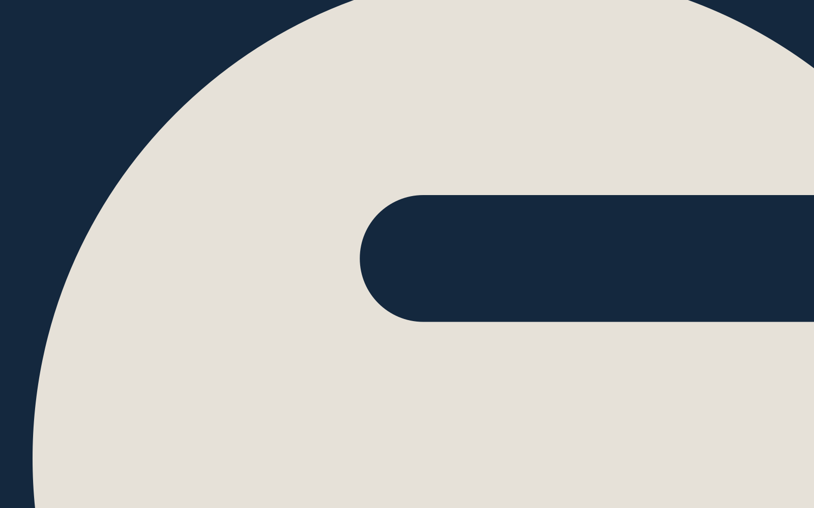
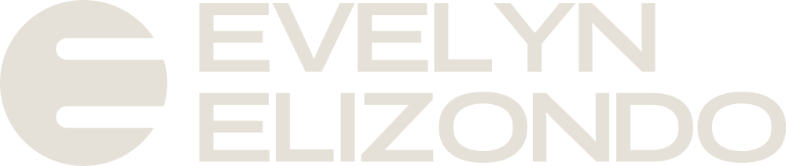
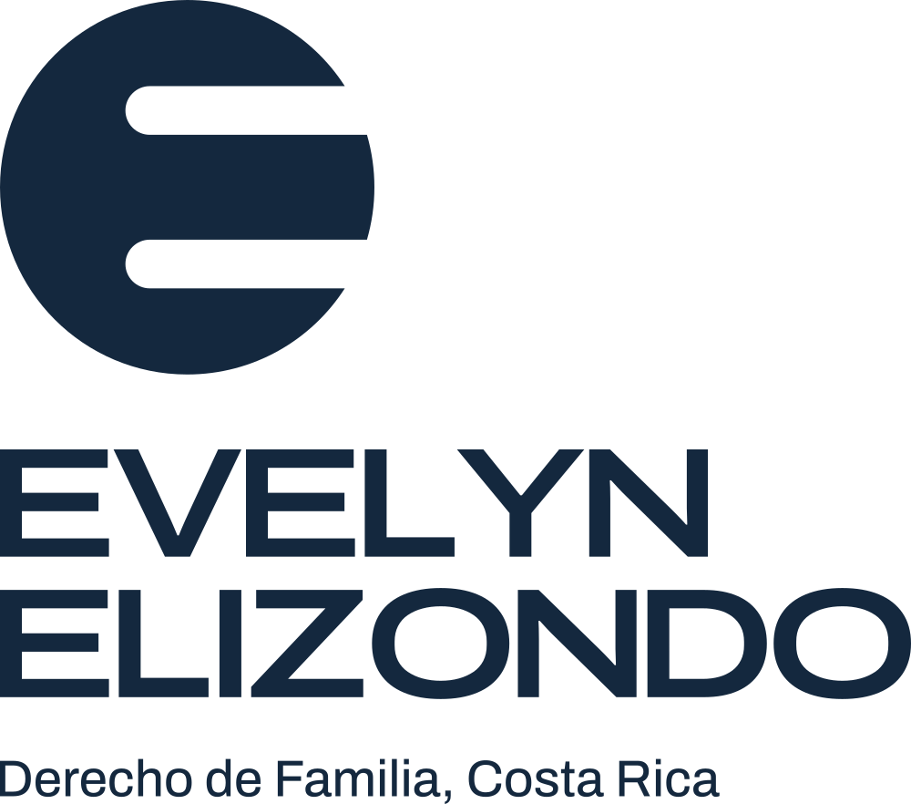
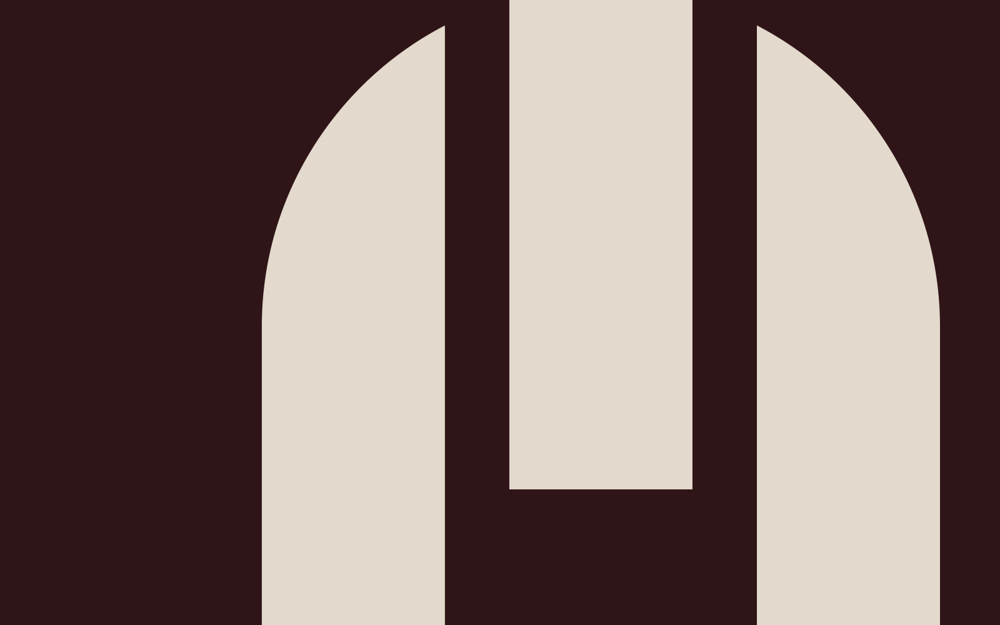
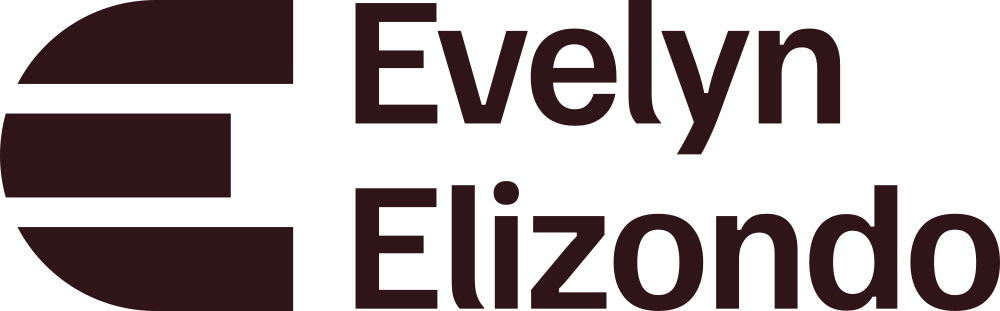
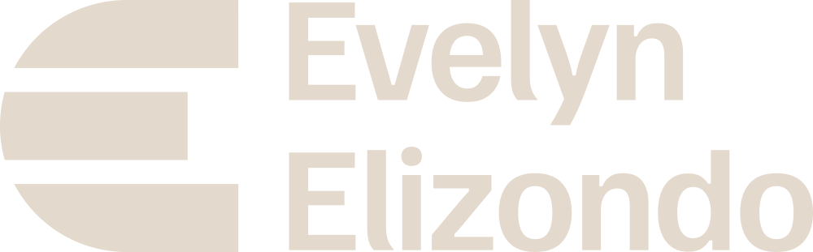
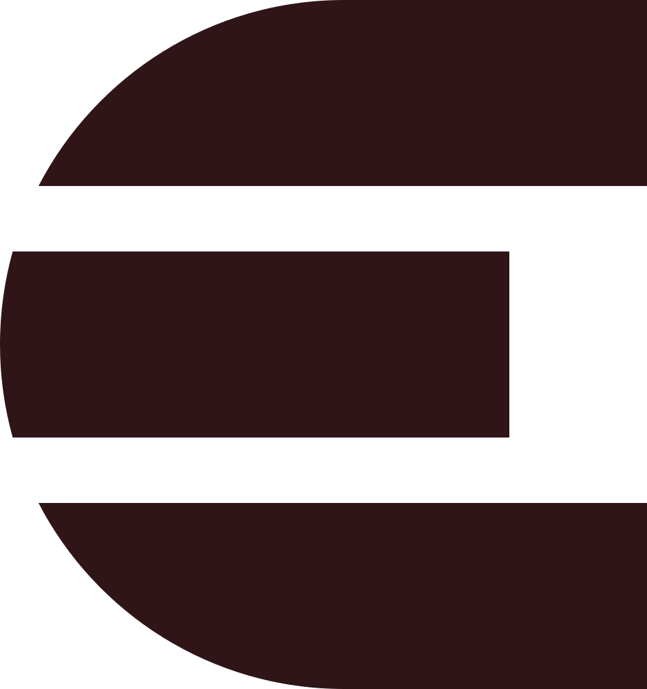

Tres identidades para Evelyn Elizondo
Derecho de Familia, Costa Rica. Segunda ronda: símbolos macizos, nombre en dos líneas y gráfica a gran escala. La propuesta A está aplicada al sitio en la rama identidad/doble.

Propuesta A
Doble
Un solo bloque de esquinas apenas redondeadas y tres cortes finos: una E mira a la derecha, la otra a la izquierda y comparten el tramo central.

El símbolo es un bloque macizo. Tres líneas finas lo parten, y entre ellas aparecen dos letras: una E de asta izquierda y otra de asta derecha.
Las dos comparten el tramo central. Son dos partes distintas, unidas por un tramo común y contenidas en una misma forma.
Ampliado, el bloque llena cubiertas y tarjetas, y las líneas finas pasan a ser la gráfica de la marca.
Logotipos


Color y tipografía
#1B1A18#DAD5CC#8E867A#F4F2EC#3A3835Marcellus, licencia SIL Open Font License 1.1.
Favicon
Aplicaciones

En el sitio real
Gráfica y redes
Riesgos que conviene conocer
- Parte de una referencia aportada para el proyecto: el logotipo de El’Element, de una colección de logotipos de 2022. Usa la misma disposición de tres cortes; cambian las esquinas redondeadas y la proporción. Quien dirige el proyecto lo decidió así porque lo considera un diseño genérico. Esa valoración no está verificada: una persona especialista debe comparar ambos antes de usarlo o registrarlo.
- Los cortes finos se cierran al reducir: por debajo de 24 px debe usarse el dibujo de cortes gruesos, y en impresión conviene una prueba.
- Es la más dura de las tres: la voz y las fotografías deben compensarlo.
Guía de marca · PDF · Archivos

Propuesta B
Disco
Un círculo macizo con dos ranuras de fondo redondo.
La letra se talla dentro de una sola forma. No hay trazo ni contorno: un disco lleno y dos cortes bastan.
Tiene la presencia de un sello. Sus ranuras redondeadas y su contorno circular le quitan dureza.
Conserva el navy del sitio, así que es la única que se puede estrenar sin cambiar su paleta.
Logotipos





Color y tipografía
#14283E#E6E1D8#7F8C99#F6F4EE#2C4158Archivo, licencia SIL Open Font License 1.1.
Favicon
Aplicaciones


En el sitio real
Gráfica y redes


Riesgos que conviene conocer
- Una E dentro de un círculo es una solución frecuente en muchos sectores. Es la propuesta con más riesgo de parecido.
- Recortado de cerca, el disco con sus dos ranuras puede recordar a un enchufe o a una cara. Por eso los formatos apaisados muestran una sola ranura.
- Sobre navy mantiene el código más habitual del sector jurídico: su fuerza depende de la forma y de la letra ancha.
Guía de marca · PDF · Archivos

Propuesta C
Portal
Un solo arco, tumbado y cortado en tres franjas, forma la E. De pie es una puerta.

La letra no tiene asta: tres franjas de una misma silueta se leen como E porque la central es más corta.
Al ponerla de pie aparece un arco, y de ahí sale su gráfica: un portal grande, con la base a sangre, en cubiertas y tarjetas.
Es la única con el nombre en alta y baja. El vino y la arena le dan un tono distinto al de las otras dos, sin imágenes de familia.
Logotipos






Color y tipografía
#2F1518#E3D9CC#9A7F73#F7F3EC#4B2B2EFamiljen Grotesk, licencia SIL Open Font License 1.1.
Favicon
Aplicaciones


En el sitio real
Gráfica y redes


Riesgos que conviene conocer
- Una versión anterior, de tres placas con cabeza redonda, podía evocar balas o lápidas y se retiró. Esta debe probarse también con personas ajenas al proyecto.
- A tamaño muy pequeño, las franjas pueden acercarse a un icono de menú: conviene usarla junto al nombre en interfaces.
Guía de marca · PDF · Archivos

Evaluación
De 1 a 5. Es un juicio razonado, no una prueba con personas.
| Criterio | A · Doble | B · Disco | C · Portal |
|---|---|---|---|
| Originalidad | 2Muy cercana a una referencia ajena, a petición expresa: misma disposición de cortes, con otras esquinas y otra proporción. | 3Forma sólida, pero una E en un círculo es frecuente. | 4El arco en franjas es poco habitual. Sin comparación exhaustiva. |
| Legibilidad | 3Las dos E se ven al mirar con atención; a primera vista es un bloque con líneas. El nombre lo aclara. | 4Se lee E; no contiene la segunda inicial. | 4Se lee E; depende de que la franja central sea más corta. |
| Memorabilidad (hipótesis, sin probar) | 4Forma muy distintiva en grande. | 4Fácil de describir: una E en un disco. | 4La gráfica del portal es lo más recordable. |
| Coherencia con Derecho de Familia | 3Seria y sólida; puede resultar fría. | 4Da presencia, con menos dureza. | 4El arco puede sugerir una entrada, sin imágenes literales. |
| Sofisticación | 5La más radical y editorial. | 4Limpia, aunque más convencional. | 4Contemporánea, con un punto art déco. |
| Tamaños pequeños | 3Necesita un dibujo de cortes gruesos por debajo de 24 px. | 5La reducción más limpia de las tres. | 3Funciona a 16 px, con riesgo de leerse como menú. |
| Integración con el sitio | 4Marcellus solo en el nombre; los titulares siguen en Schibsted y convive con el árbol. | 5Conserva el navy: se puede estrenar sin cambiar la paleta. | 3Pide cambiar paleta y fuentes del sitio. |
| Viabilidad técnica y licencias | 5OFL; logotipo en trazos. | 5OFL; logotipo en trazos. | 5OFL; logotipo en trazos. |
| Total sobre 40 | 29 | 34 | 31 |
Recomendación
Se eligió A · Doble, con hero negro y logo crema, y está aplicada al sitio en la rama `identidad/doble`. Pesó el criterio de quien dirige el proyecto, que quería un bloque macizo con cortes finos, sobre la tabla: en puntos queda por detrás de B y C.
B · Disco y C · Portal se conservan como alternativas.
Las puntuaciones son un juicio razonado, no una prueba con personas. Falta la aprobación de Evelyn y la búsqueda de marcas.
Proceso


Estado
117 SVG y 111 PNG comprobados, con 0 fallos automáticos. Las escenas son visualizaciones 3D generadas por ordenador, no fotografías.
Análisis de la referencia, decisiones y límites · Evaluación en texto · Primera ronda, descartada
Falta
- Decisión de Evelyn. Se eligió A, con hero negro y logo crema; está aplicada al sitio en la rama identidad/doble.
- Búsqueda de anterioridades de marca: las búsquedas web no autorizan ningún registro.
- Teléfono, correo, dirección y carné: las piezas aún no los incluyen, porque falta confirmarlos.
- Prueba de imprenta y prueba con personas.